Brushing Glaze
Hobbyists and increasing numbers of potters use commercial paint-on glazes. It's convenient, there are lots of visual effects. There are also issues compared to dipping glazes. You can also make your own.
Key phrases linking here: brushing version, brushing glazes, brushing glaze, high sg, low sg - Learn more
Details
The ceramic hobby casting industry has long used commercially prepared, gummed, paint-on (or brushing) glazes and underglazes. In recent years the hobby pottery community has followed suit. Even professional potters, who in the past made their own dipping glazes, have embraced the use of bottles of brushing glazes for some or all of their ware. Websites selling pottery equipment and supplies (and physical stores) often feature glazes very prominently, a reflection of how popular and lucrative these are. In fact, prepared glazes are now closer to the centre of the potter's universe than clay bodies! So clay body manufacturers are adapting their products to work with the glazes (rather than the other way around).
To a potter used to dipping ware and having the glaze dry-to-the-touch in seconds, painting 2-4 layers with a drying period in between can seem very tedious. But in practice, it can be practical. The paintability improvement that comes with CMC gum (or similar) addition is remarkable, the consistency and drying is not unlike latex paint. Gelling agents (like Veegum, not CMC gum) enable a higher water content, without settling, while still holding in place on vertical surfaces.
Typical brushing glazes are sold in 1 pint or 500ml jars. For a high specific gravity slurry (e.g. 1.6) a 500:350g powder:water would be typical (no Veegum would be needed). A low specific gravity (SG) 1.3 version could be the opposite, 350:500g powder:water (Veegum needed). The high SG approach is better for slurries having plenty of plastic clay (e.g. underglazes, slips) they need to go on thicker in one stroke (especially on leather hard clay). Brushing glazes for bisque work better with lower SG’s, these require more coats but, as noted above, give better control of total thickness.
Organic and inorganic gums are used in ceramics. The former suffer bacterial growth issues, so antimicrobials are often needed to counteract this (bacteria degrades the performance of the gum). Brushing media products can also be substituted for part of the water (like propylene glycol, the name sounds bad but it's not toxic, or Floetrol, a brand-name product) to make glazes brush better. Actually, you can make your own brushing medium that can be added to any dipping glaze by mixing Veegum CER and water. Beware of any product that bills itself as an additive that can make any glaze brushable. Three properties are needed: Slower drying, hardening on drying and gelling. The nature of the recipe is important in deciding which additive(s), what percentage and how much water are needed.
The advantages of brushing glazes include:
-A wide range of colors and visual effects.
-Good in classroom settings. Labels are clear.
-Ability to layer.
-Avoidance of the need to mix or maintain larger buckets of dipping glaze.
-Greater ability to control overall thickness (although homogeneity of thickness is more difficult).
-The avoidance of runny, experimental or miss-mixed test glazes that ruin kiln shelves.
-The ability to glaze unbisqued ware (greenware), re-qlaze or glaze vitrified bisque.
-Food-safe, durable (at least claimed).
-Special effects like metallics, reactives, bright colors, layered variegation.
-Suppliers also love bottled, paint-on glazes. They make more money and inventorying, customer service and labour are reduced.
-The well-adhered dense, bubble-free lay-down often fires with fewer defects.
The disadvantages of brushing glazes include:
-Commercial bottled glazes are much more expensive than mixing your own. A potter stocking up at his supplier can spend thousands of dollars (as opposed to the hundreds he would spend for buying the materials to mix his own).
-Since the body and glaze manufacturers are separate companies, compatibility and fit between the products is often by accident (thus crazing, shivering, going milky are common). Typically glaze companies err on the side of a thermal expansion as low as possible while avoiding crazing this increases the likelihood of shivering and glaze compression failure. Still, they would generally agree that craze testing is something that must be done on specific body/glaze combinations.
-The recipes are unknown. They claim they are food-safe; but very bright colors, high melt fluidity, heavy crystallization - these are all associated with leaching.
-They breed customer ignorance of how glazes work. The recipes and techniques for a wide range of visual effects were once known by potters, and many knew how to tweak them for their circumstances, now this knowledge is being lost.
-They breed ignorance of how to maintain the specific gravity, viscosity and thixotropy of a slurry.
-They breed a weekend-warrior (as opposed to cottage industry) mentality in ceramics.
-When simple, clean, functional surfaces are needed (transparent or colored) paint-on glazes do not apply nearly as evenly as traditional non-gummed dipping ones. Dipping versions of common bottled glazes are available from manufacturers, but they may be gummed also (to function as a base coat). These dry slowly and drip, drip, drip more during draining.
-Paint-on is slow. Multiple coats with drying in-between really lengthens glazing time. Doing two thicker coats of higher specific gravity glaze produces much less even coverage (which is really noticeable for bright colors). For the most even coverage possible, four coats of a low-specific-gravity glaze produce the best result.
-Highly gummed glazes do not shed well from wax resist.
-They often do not fire as expected on a clay body (even though the supplier might have glossy and elaborate documentation).
-Stocks of bottles run out more frequently, often at very inconvenient times.
-Old dried-out or water-reduced jars are difficult to restore to working condition and it is almost impossible to sieve them (because of the gum).
There is thus good reason to learn to use both types!
Make Your Own Brushing Glazes
First, some people claim that any dipping glaze can be converted into a brushing glaze by adding gum solution. The problem with this is imprecision. While anecdotal reports might herald the success of this approach, it is not the right one for people systematically mixing their own. This approach ignores the actual percentage of gum being introduced to the recipe and the change in specific gravity (both are very important for good performance). The best approach is to work with powdered additives, bentonite and water, mixing from scratch.
Second, decide whether to add bentonite. Adequate particle surface area is needed on which the gums can act. If a glaze already has plenty of clay, especially ball clay or Gerstley Borate, then bentonite is not needed. But if it just has 20% or less kaolin then bentonite may be needed (e.g. 1-2%). At the other extreme, underglazes will certainly need bentonite if the recipe does not have a high clay content (e.g. more than 60%). Bentonite is inexpensive and may also minimize the amount of Veegum needed later.
Third, CMC gum will always be needed to slow drying and harden and adhere it. About 1.5% of the total powder amount is a good starting point. Blender mixing of the powder has proven to be effective, gum solution is not needed. Something important to consider is microbial attack on the gum over time, this becomes evident if the glaze goes thinner and does not cover or paint on as well.
Fourth, low specific gravity glaze slurries (ones having lots of water), must be gelled to prevent settling and keep them from running after application. After mixing and test brushing it will be evident if VeeGum will be needed. The powder can be slowly added while the mixer is on high speed until the degree of gel needed is reached, the amount should not be over about 1.5% of the total powder weight. As a guide, we make a typical brushing glaze using 5g each of CMC and VeeGum in 340g powder and 450g of water. Veegum CER, a 50:50 mix of Veegum T and CMC gum. Blender mixing works so well that sieving is not normally needed. For brushing engobes a CMC-only approach is likely better (since they have high clay content and thus suspend and gel naturally). That being said, if the engobe contains a granular (e.g. manganese) then extra gelling is needed and some Veegum, perhaps half of the above mentioned, would be good.
Related Information
You may know Veegum T but do you know VeeGum CER?
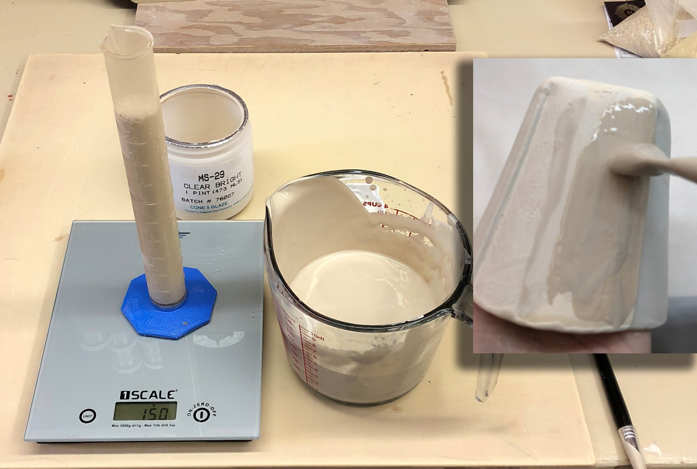
This picture has its own page with more detail, click here to see it.
The glaze in this jar was 'goop', impossible to paint on because it was too viscous. And it dried way too fast. Laguna mentions adding water so I measured the specific gravity (SG): 1.7. That is super-high, it took a 125cc addition to bring it down to 1.5, but it was still thick, dried even faster, and brushing it on evenly was even harder. It was not obvious what to do next. It needed a lot more water (1.3-1.35 SG is normal for multi-layer application of low SG glazes), adding CMC gum and enough water to do that would produce an unusable watery and sticky slurry. Veegum CER to the rescue! It is a 50:50 mix of CMC gum and Veegum T. The former slows drying and hardens, the latter gels. So it can simply be added until the painting properties are right. And, a Veegum CER solution is easier to handle than one of CMC gum. The brushing properties are just right, it gels nicely on standing and stays in place on verticals. CER is also good for highly fritted dipping glazes or others lacking in clay content (otherwise CMC might still be better).
DIY brushing glazes by-the-jar:
Here is my setup to make them
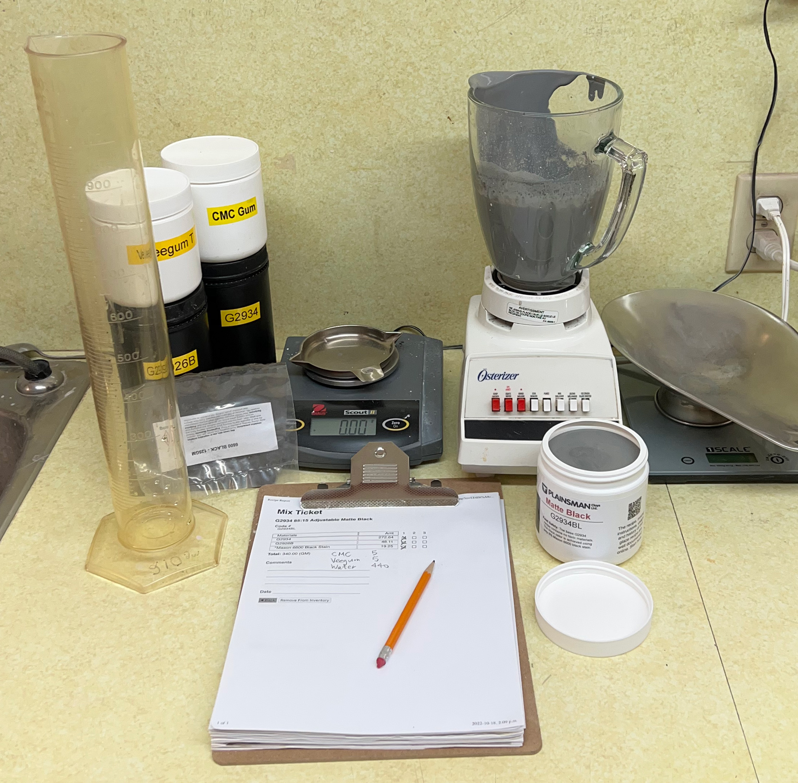
This picture has its own page with more detail, click here to see it.
Let's make a DIY low SG version of G2934BL. Weigh out 340g of dipping glaze powder. Include 5g Veegum (to gel the slurry to enable more than normal water) and 5g CMC gum (for slow drying and brushing properties). Shake-mix all the powder in a plastic bag. Pour it into 440g water, blender mix on low speed, then finish with 20 seconds on high speed. This fills a 500ml jar. In subsequent batches, I adjust the Veegum for more or less gel, the CMC for slower or faster drying and the water amount for thicker or thinner painted layers. Dipping glaze recipes can and do respond differently to the gums. Those having little clay content work well (e.g. reactive and crystalline glazes). If bentonite is present, it is often best to leave it out. Recipes having high percentages of ball clay or kaolin might work best with less Veegum. Keep good notes (with pictures) to reach the objective of good brushing properties. Use code-numbering on the jars and test pieces.
Here is some incentive: Brushing glazes have gotten to the point where it can cost $5 to glaze one mug! This is so worthwhile doing that I make custom labels for each jar!
Two methods to make your own low SG brushing glaze.
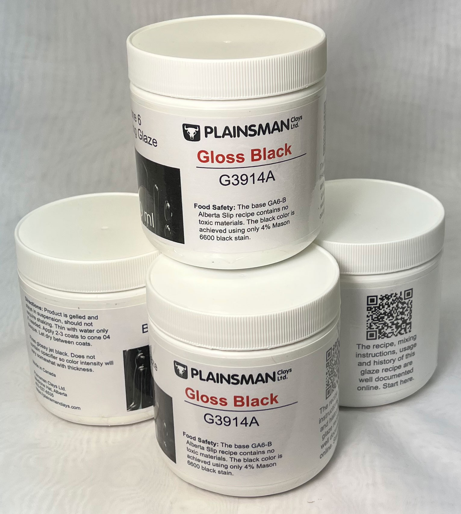
This picture has its own page with more detail, click here to see it.
Dipping glaze applies and dries in seconds. Brushing glazes dry slowly and dry hard. Brushing glazes simply have gum in the recipe, dipping glazes typically do not. This is the Alberta Slip cone 6 base, made jet black with 4% black ceramic stain (our code G3914A). We normally mix this as a dipping glaze but I have made a 500ml jar of low SG brushing version using both of the following methods. These methods will work for almost any glaze recipe (for those having exceptionally high clay content less Veegum is needed).
1) Shake together, in a plastic bag, 340g of mixed glaze powder with 5g of Veegum and 5g of CMC gum. Add that to 440g of water in a kitchen blender and mix on high speed until it gels (the gums resist mixing so the highest speed for at least 30 seconds is needed to prevent lumps).
2) Take 680g of dipping glaze (assuming it is about 50:50 water:powder you get 340g of dry), put that in the blender with another 80g of water and proceed as in method 1. Less total water is being used because the dipping glaze might not be exactly 50:50 water:powder. During mixing, if it gels too much add the extra 20g of water.
I made black and white brushing glazes from my base cone 6 transparent
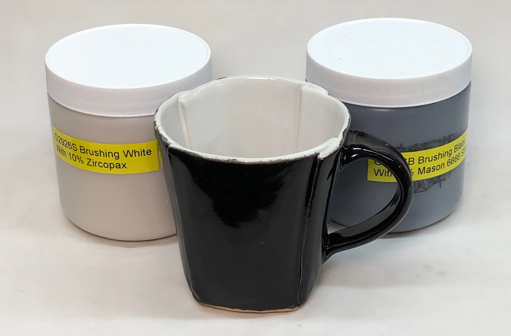
This picture has its own page with more detail, click here to see it.
To make high SG brushing versions of these glazes I started by blender mixing 500 grams of the G2926B transparent base clear to 250g of water and 100g of Laguna gum solution. That yielded about 550 ml, the resulting 1.58 specific gravity makes each layer go on quite thick. For the black, we added 30g more of Mason 6666 stain (6%) and for white 50g of Zircopax (10%). This increased the specific gravity to 1.63, much higher than any commercial brushing glaze. The black recipe costs about 1.4 cents/ml for us to make (compared to Amaco C-1 Obsidian @ 4 cents/ml to buy). But that is not the whole story, ours have a much lower water content so each ml will cover much more surface. The price advantage would be much better if we were to add enough water and Veegum gelling agent to bring the specific gravity down to the 1.4 value of C-1.
The glaze cost on this mug is three times the cost of the clay!
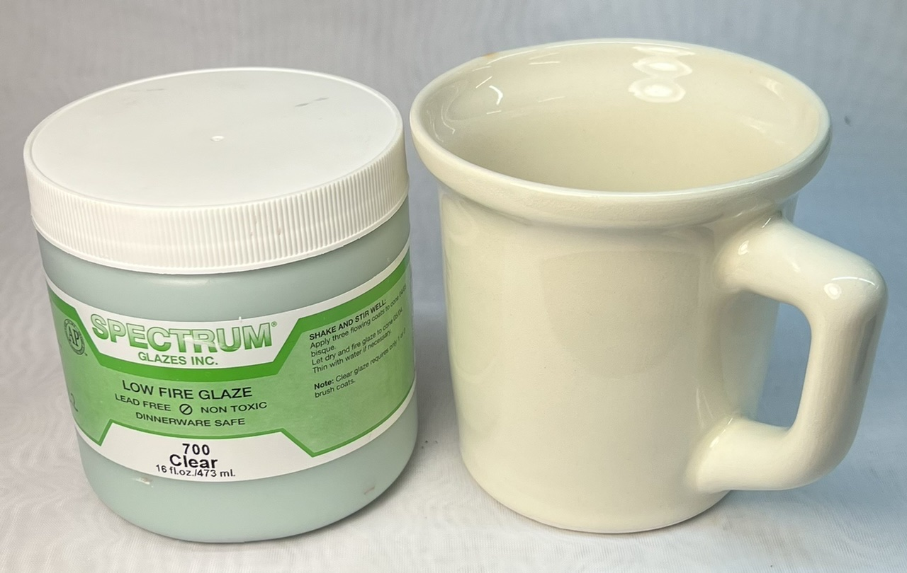
This picture has its own page with more detail, click here to see it.
This jar of glaze will do seven of these mugs! Four coats are required because it is watery. What about the time? To glaze a thin-walled piece like this could take an entire morning of applying coats and waiting for them to dry. There are two obvious choices for a more economical and faster method: Make your own high SG brushing glaze and do it in two coats, heating the piece to about 200F between each. Or heat the piece once to 250F and quickly immerse it in a dipping glaze and be done in 10 seconds! Our G3879 or G1916Q recipe families are a good starting point for both options. Another point about time cost: We can weigh out and mix a jar of brushing glaze of either in ten minutes. Or weigh out a whole pail of a dipping version in 15 minutes.
Common dipping glazes converted to jars of high SG brushing
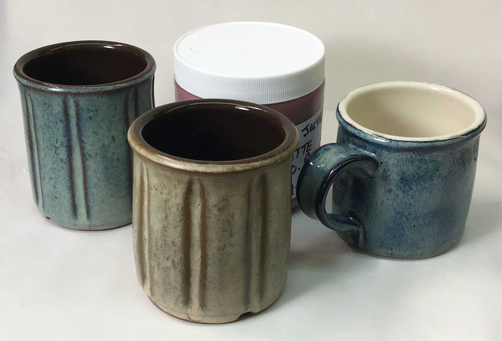
This picture has its own page with more detail, click here to see it.
These are cone 6 Alberta Slip recipes that have been brushed onto the outsides of mugs (three coats gave very thick coverage). Recipes are GA6-C Rutile Blue on the outside of the left mug, GA6-F Alberta Slip Oatmeal on the outside of the center mug and GA6-F Oatmeal over G2926B black on the outside of the right mug). These one-pint jars were made using 500g of powder, 280g of water and 75g of Laguna CMC gum solution (equivalent of adding 1% powdered CMC). Because no Veegum is being used this blender mixes to a slurry of high 1.6 specific gravity (for thicker coverage per coat than commercial glazes having much more water). This approach is good for recipes high in Alberta Slip. The gum removes the need for roasting part of it, reduces the water needed and the plasticity of the Alberta Slip helps suspend the slurry.
Specific gravities on three commercial glazes might surprise you
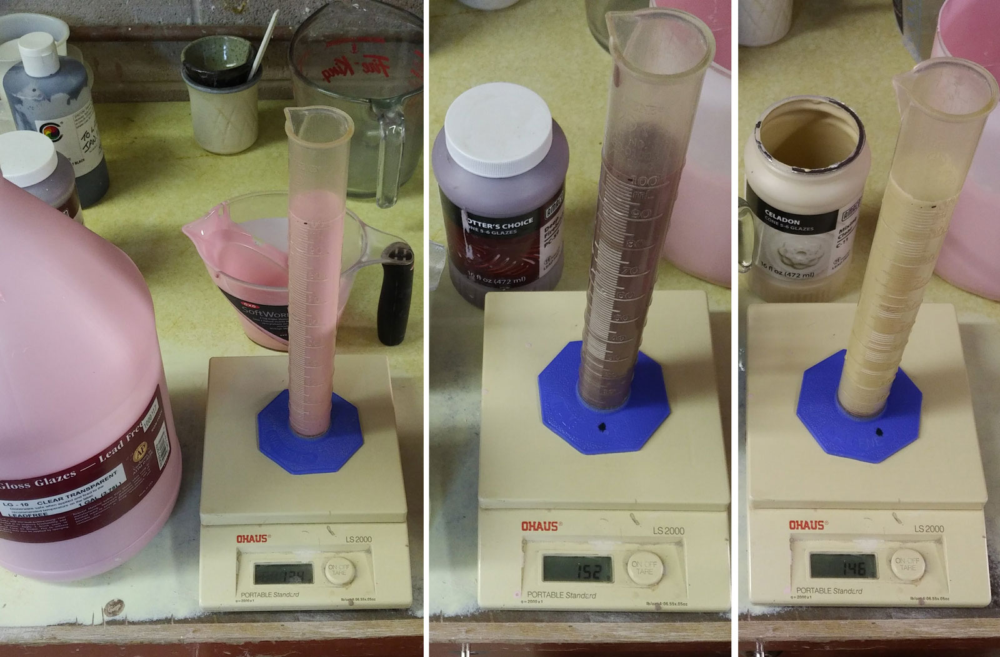
This picture has its own page with more detail, click here to see it.
The freshly opened transparent low-fire glaze on the left has a specific gravity of only 1.34 (a high water content compared to dipping glazes). Yet it is viscous and holds in place because they add a lot of gum. It needs three coats to go on thick enough and requires quite a bit of time to dry each one. Highly fritted transparent glazes need to be applied thin enough to be clear, thick enough to be glassy smooth but not too thick (to avoid clouding). Amaco likely targets the low specific gravity to enable good control of thickness. The center Potter's Choice glaze, is 1.52. And thus goes on nice and thick with each coat. That glaze likely contains lots of clay so little or no gelling agent (e.g. Veegum) is needed. The Celadon glaze on the right is in between, 1.46. Glaze manufacturers can produce at a broad range of specific gravities, they adapt the percentage of gum (e.g. Veegum and CMC gum) to impart the needed rheology and brushing characteristics.
Very low specific gravities on two commercial underglazes
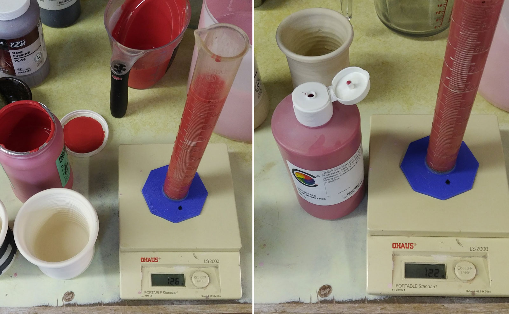
This picture has its own page with more detail, click here to see it.
AMACO and Crysanthos. 1.26 (67.5% water) and 1.22 (68% water)! The former is well below their recommended specific gravity of 1.4 (it still paints well but needs more coats and more time to dry and apply them). The Crysanthos, although having a lower specific gravity is more viscous and goes on thicker (so it likely contains more gelling agent). When doing underglaze decorative brushwork it is important to get adequate thickness with each brush stroke, so a higher specific gravity is better. This may be reason enough to consider making your own (by adding stain powders to a base and using Veegum CER to gel the slurry, slow down its drying and harden it well at the dried state).
A 2oz jar of underglaze:
It dries down to 21g of powder!
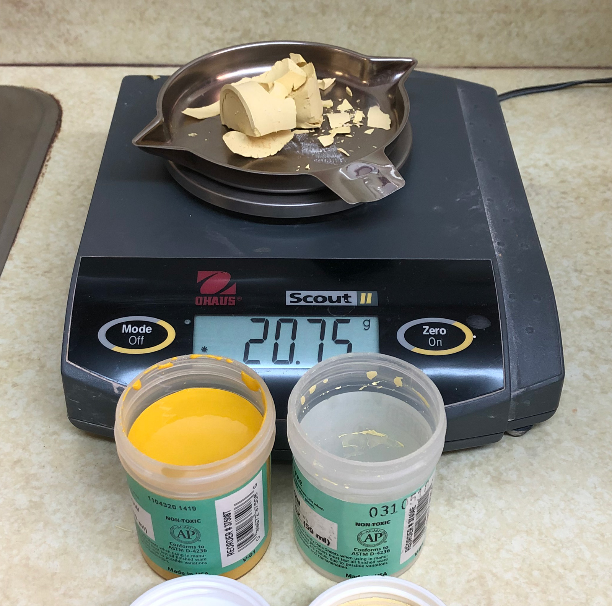
This picture has its own page with more detail, click here to see it.
At current prices, that is 75 cents/g! Only half is actual stain powder. Before considering cost, note that the high water content of these is actually a benefit; the thixotropic gel has excellent brushing properties, enabling very thin layering. However, more than one layer is needed to achieve opacity and even color.
Because I am all-in on DIY, the elephant in the room is price. In one scenario, using encapsulated red stain and assuming 50% in my underglaze recipe, I calculated a 1500% saving (assuming the same specific gravity)! But it gets better. I make mine with a higher specific gravity and a much lower stain percentage (e.g. 20%) to get the same result. It goes on in one coat. I also fine-tune the degree-of-melt adjusting the feldspar. And I optimize bisque hardness, and thus overpaintability, by adjusting the clay percentage. With my setup, I can weigh and make a 1-pint jar of underglaze in ten minutes. Another bonus: When I find ways to improve, I edit the notes in its recipe record in insight-live (and adjust the procedure or recipe for next time).
Dip-glazing vs. brush-on glazing: Which gives the more even surface?
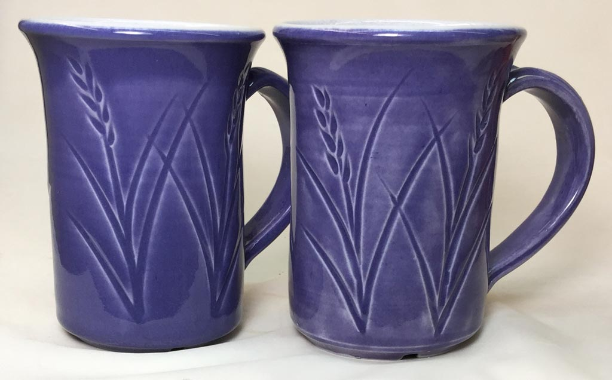
This picture has its own page with more detail, click here to see it.
This is a clear glaze (G2931K) with 10% purple stain (Mason 6385). The mugs are cone 03 porcelain (Zero3). The mug on the left was dipped (at the bisque stage) into a slurry of the glaze (having an appropriate specific gravity and thixotropy). The glaze dried in seconds. The one on the right was painted on (two layers). Like any paint-on glaze, it contains gum (1% CMC). Each layer required several minutes of application time and fifteen minutes of drying time. Yet it is still not evenly applied.
Brush-on commercial pottery glazes are perfect? Not quite!

This picture has its own page with more detail, click here to see it.
Brushing glazes are great sometimes. But they would be even greater if the recipe was available. Then it would be possible to make it if they decide to discontinue the product. Or if your retailer does not have it. Or to make a dipping glaze version for all the times when that is the better way to apply. The glaze manufacturer did not consider glaze fit with your clay body, if they work well together it is by accident. But if you have transparent and matte base recipes that that work on your clay body then adding stains, variegators and opacifiers is easy. And making a brushing glaze version of any of them. Don't have base recipes??? Let's get started developing them with an account at insight-live.com (and the know-how you will find there)!
My clear glaze outside. Commercial white inside. But a big problem!
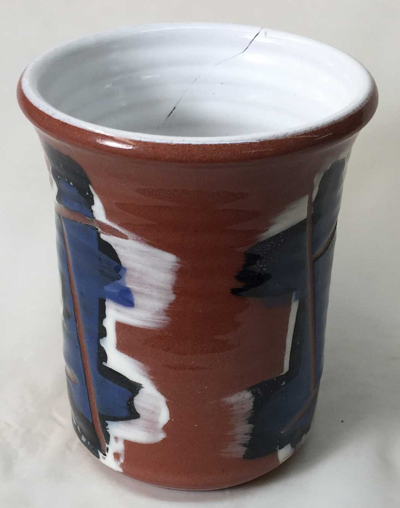
This picture has its own page with more detail, click here to see it.
I know my outside glaze recipe fits this terra cotta. It does not shiver on sudden heating or craze on sudden cooling. And I have a gallon so I can dip-glaze the outside and it dries perfectly in seconds. But that inside glaze? It is under too much compression, so much so that it is literally forcing the piece apart (that crack exploded onto the scene with a loud ping a day after firing). But I do not know the recipe. And I had to paint it on in three coats. The painting was difficult and it took ten minutes to dry each coat. A better way to do a cover glaze would have been to simply add 10-15% Zircon to my clear recipe (I can even adjust if the added zircon lowers its expansion too much). To apply that would have been a simple pour-in and pour-out. Or I could make my own pint-jar of brush-on by using a mix of gum solution and water (instead of pure water).
Commercial glazes may or may not work on your clay body

This picture has its own page with more detail, click here to see it.
Left two: Plainsman M390 stoneware. Lower right: M370 porcelain. The bottom two samples are a popular cone 6 ultra clear commercial bottled glaze. On the porcelain, it is crazing. On the red clay it is saturating with micro-bubbles and going totally cloudy, with so many ripples in the surface the texture has become satin. Whose fault is this? No ones. This glaze is simply not compatible with these two bodies. The one on the upper left has almost no bubbles and no crazing. It is the GA6-B recipe. It is well-documented and easy to adjust.
Veegum is not a gum, it is a gelling agent.
CMC gum needs something it provides.
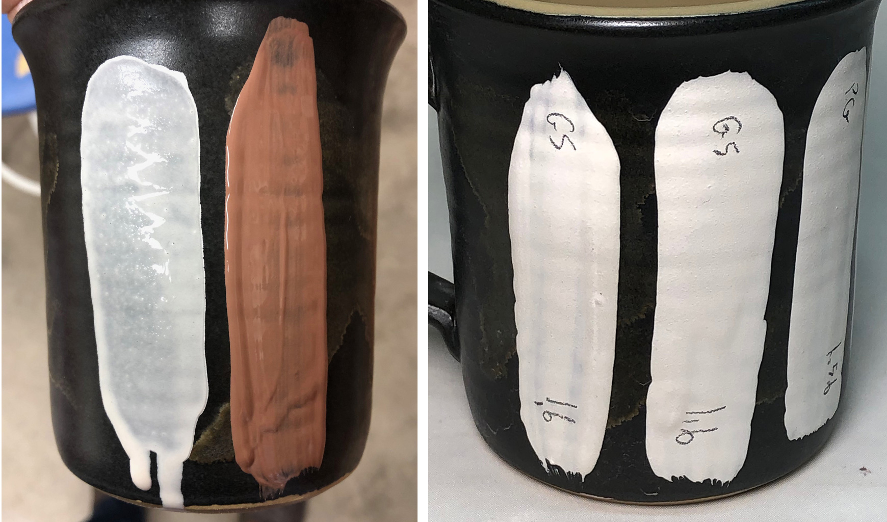
This picture has its own page with more detail, click here to see it.
On the left, the brush-strokes of gummed glaze, which I batched myself, have been freshly painted onto an already-fired glaze. Notice the brown brush stroke holds its character. It has a high specific gravity (SG): 1.6. And contains 1.5% CMC gum. The white one to its left, whose brush stroke has flattened and it is running downward, has the same gum content but an SG of 1.5. Is it running because of its lower SG? No. Commercial glazes with an SG below 1.3 still hold in place well. How? Because they also have a gelling agent (e.g. Veegum - it has an unfortunate name, it is not a gum). That reveals a secret: Gums and gelling agents need each other. CMC Gum needs particle surface area to work its magic and bentonite, the gelling agent here, supplies that. And, the gelling agent needs the gum to slow down drying and enable a hard and crack-free dried surface. The dried strokes on the right demonstrate that - 2% bentonite has been added to the drippy one on the far left. They held in place because of the bentonite and hardened without cracking because of the CMC gum.
Commercial brushing glaze on a non-gummed dipping glaze: Crawling

This picture has its own page with more detail, click here to see it.
Non-gummed dipping glazes go on evenly and dry quickly on bisque ware (if properly gelled). But they only work well as a single layer. If you try to paint commercial gummed brushing glazes over them the latter will compromise their bond with the body, cracks will develop during drying and bare patches like this will result during firing. For multi-layering the base dipping glaze must be gummed (e.g. 1% CMC gum). It will go on thinner, drip longer and dry much slower, but that is the price to pay if you want to layer over it.
When brushing glazes go on unevenly adding stain can help
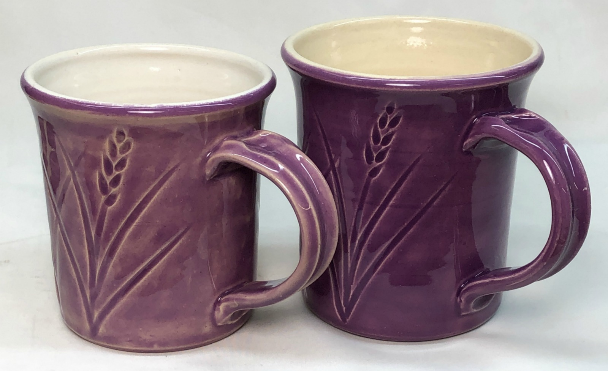
This picture has its own page with more detail, click here to see it.
Both of these were glazed by brushing. The inside transparent and white glazes are fairly easy to apply evenly but the bright color on the outside left one certainly is not. The problem is a combination of things. It is difficult to apply it evenly enough using a brush, the slurry is too thin. So it is also difficult to get it on thick enough. And this commercial glaze does not contain enough of the purple stain (so I added 6 grams of Mason 6304 Violet stain powder to the 2/3 of a jar I had left, and mixed thoroughly). That, more careful brushing, and an extra layer produced the piece on the right!
4 coats vs 3 coats of red brushing glaze
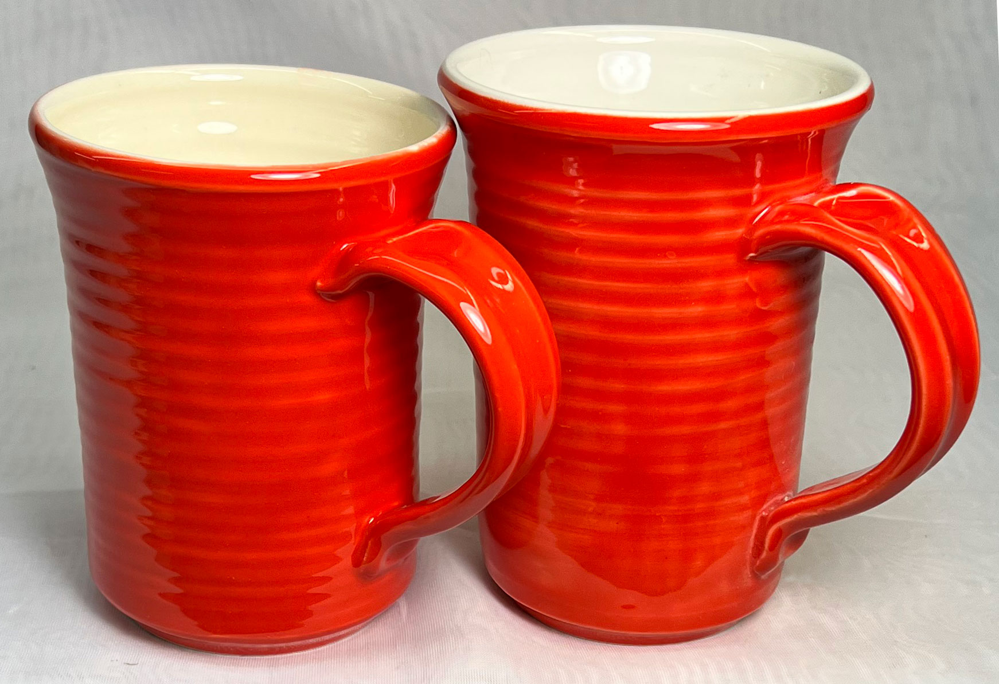
This picture has its own page with more detail, click here to see it.
These were fired at cone 04 using Spectrum glazes. Both were glazed using the same brushing technique. The one on the left has 4 coats, on the right three coats. The high spots on the throwing rings and the edges of contours are more visible when the glaze is thinner.
Glaze large bowls inside-and-out by brushing:
By turning your dipping glaze into a brushing glaze
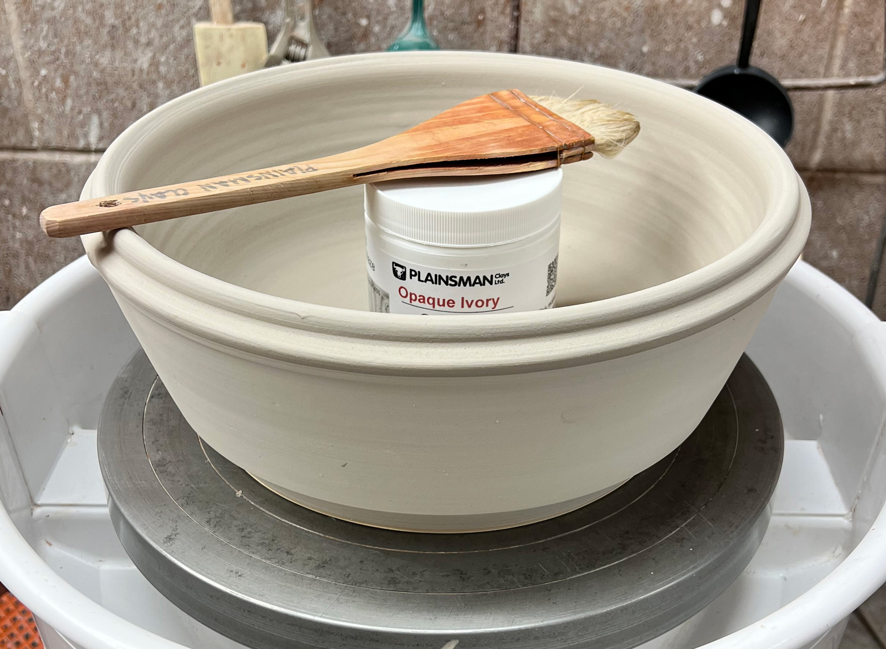
This picture has its own page with more detail, click here to see it.
This wheel-thrown bowl is large, heavy and thick-walled. There are pouring techniques to apply different colored dipping glazes inside and out, but they are cumbersome and slow. It turns out that the hobbyist way of glazing is actually better - by brushing. I make these 500ml jars of brushing glaze and tune the percentage of gums to get the right painting consistency and drying time. Applying multiple coats by brush takes only a few minutes, and no wax resist or any other tools are needed. And it is easy to meet two glazes in a straight line at the rim. On this piece, the inside glaze is G2936B and the outside is G2926B. Both are almost always used as thixotropic dipping glazes, but nothing about such recipes disqualifies them from being mixed as brushing glazes.
The secret to brushing glazes on large pottery items:
Pour-feed the brush in one long stroke.
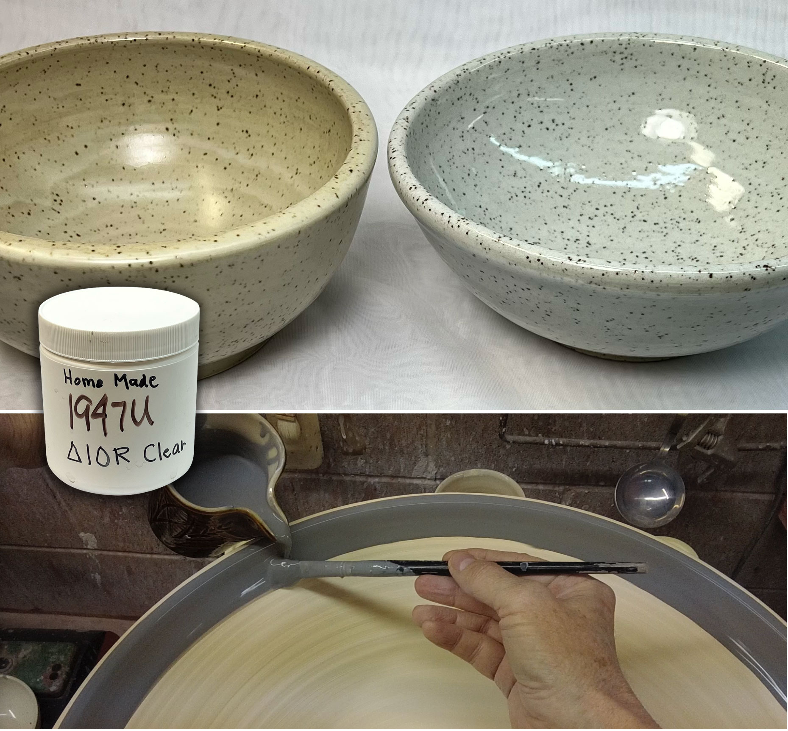
This picture has its own page with more detail, click here to see it.
On the left I applied pure Ravenscrag slip, as a glaze, inside and out, using only a small brush. I did the same to the bowl on the right, using the G1947U transparent glaze. Both of H550 clay. We almost always use these as dipping glazes. But here I mix them as brushing glazes, adding 10g CMC gum powder to one liter of a water-reduced version of the slurries. Blender mixing makes it possible to mix in the powdered gum and tune water content for the best brushing experience. The gum slows down the drying speed dramatically so there is plenty of time to brush it into place (while the wheel is turning). The gum also greatly increases the cohesion, enabling pouring out of a pitcher in a long thin stream. In this firing I also glazed a leather hard 40-inch tall vase and a 35 lb bone-dry bowl using the same technique. The evenness of coverage was the best I have ever gotten (of any technique) on large sizes and shapes.
It might surprise you that handmade tile is often glazed using brushing. A glaze can be squirted onto a tile and spread with a large brush in seconds. This can be done on a passing conveyor or in batches on a table.
Inbound Photo Links
 Learn to mix any of your glazes for these three application methods |
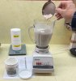 Control gel using Veegum, brushing properties with CMC gum |
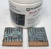 The Floating blues we should have manufactured: The closest we got was labels |
Links
| Materials |
CMC Gum
CMC gum is indispensable for many types of ceramic glazes. It is a glue and is mainly used to slow drying and improve adhesion and dry hardness. |
| Articles |
Where do I start in understanding glazes?
Break your addiction to online recipes that don't work or bottled expensive glazes that you could DIY. Learn why glazes fire as they do. Why each material is used. How to create perfect dipping and brushing properties. Even some chemistry. |
| Articles |
Creating a Non-Glaze Ceramic Slip or Engobe
It can be difficult to find an engobe that is drying and firing compatible with your body. It is better to understand, formulate and tune your own slip to your own body, glaze and process. |
| URLs |
https://docs.google.com/spreadsheets/d/1XLPlIrW4tXnqAyowrE_P96OmbMfzEA-ggkYHcqBHtSU/edit?usp=sharing
CMC Gum Calculator - Worksheet Use this to calculate how much gum and water to use when mixing a new glaze or how to calculate and replace some of the water in an existing glaze slurry with gum solution. |
| URLs |
https://fb.watch/F1S3h84Zkq/?fs=e
Video: How gummed glazes can flow using a fan brush. Notice the slurry is gelled and can be applied slowly and deliberately, it does not dry on contact as a dipping glaze would if you try to brush it. People obsess over fired appearance but can forget the importance of good working properties needed to get it. |
| URLs |
https://www.instagram.com/reel/DVPM4MQCH-Y
Factory worker quickly doing banding and an underglaze color wash using a brush |
| Glossary |
Glaze Mixing
In ceramics, glazes are developed and mixed as recipes of made-made and natural powdered materials. Many potters mix their own, you can to. There are many advantages. |
| Glossary |
Dipping Glaze
In traditional ceramics and pottery dipping glazes can be of two main types: For single layer and for application of other layers overtop. Understanding the difference is important. |
| Glossary |
Base-Coat Dipping Glaze
These are ceramic glazes intended for dipping but which contain a gum to enable them to adhere to the body better and tolerate over-layers without danger of flaking or cracking. |
| Glossary |
Limit Recipe
"Recipe logic" is the ability to sanity-check ceramic glaze recipes on sight, by noting that materials present and their relative percentages. |
| Glossary |
Spray Glazing
In ceramic industry glazes are often sprayed, especially in sanitary ware. The technique is important. |
| Glossary |
Glaze Layering
In hobby ceramics and pottery it is common to layer glazes for visual effects. Using brush-on glazes it is easy. But how to do it with dipping glazes? Or apply brush-ons on to dipped base coats? |
 PayPal | No tracking, No ads, No paywall, No transient content! Just organized, concise information constantly updated and improved. Was this helpful? Consider supporting me. |
| By Tony Hansen Follow me on        |  |
Got a Question?
Buy me a coffee and we can talk 

https://digitalfire.com, All Rights Reserved
Privacy Policy